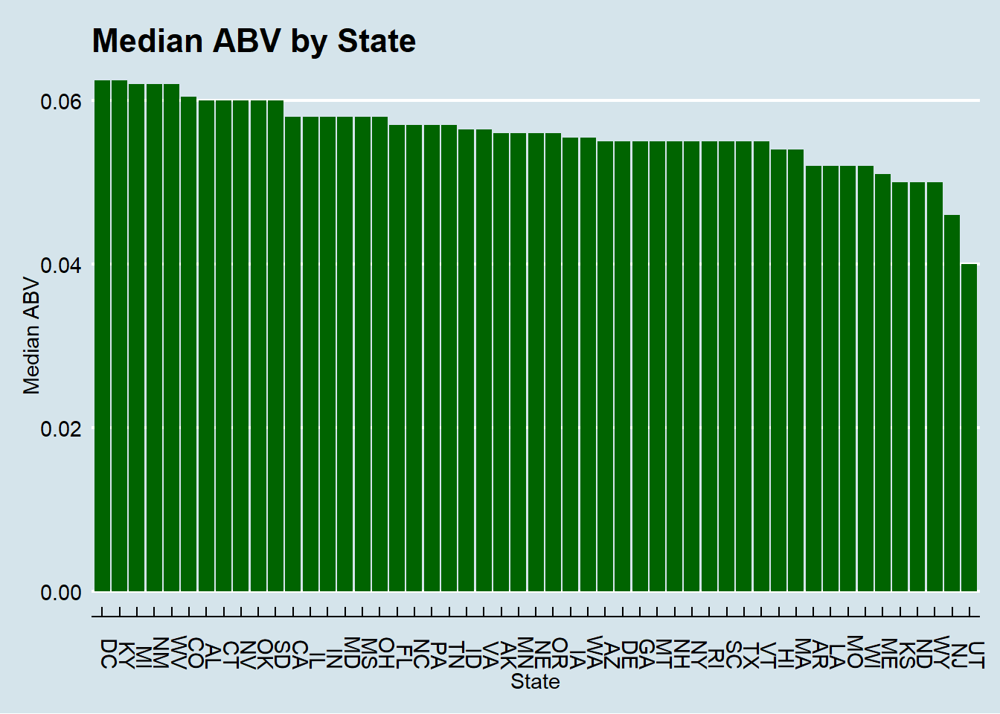
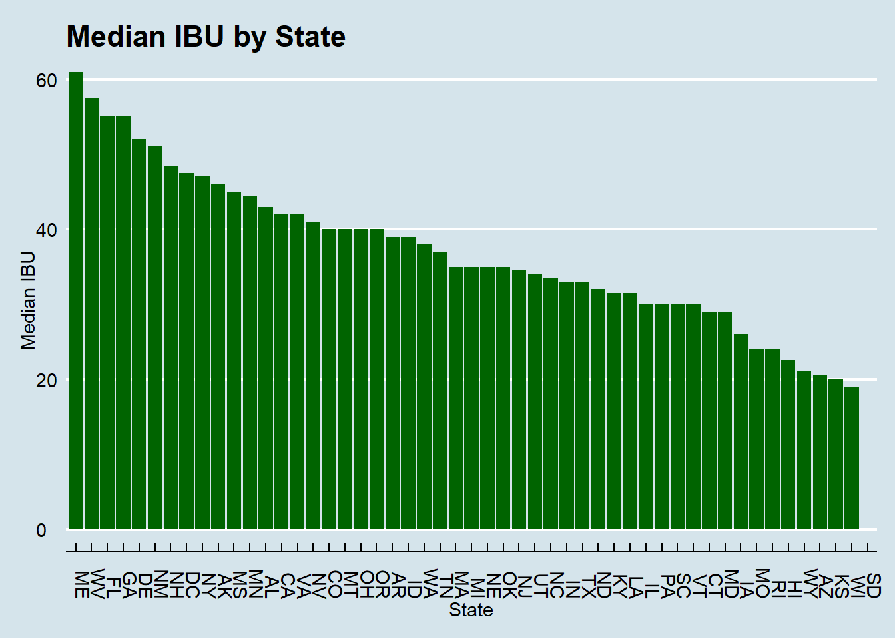
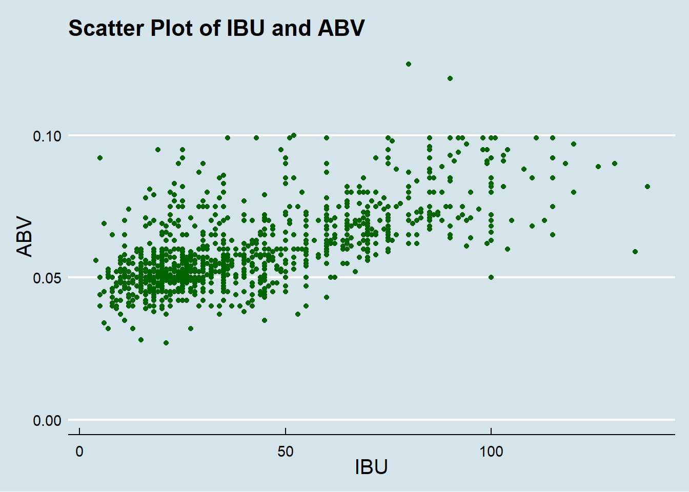
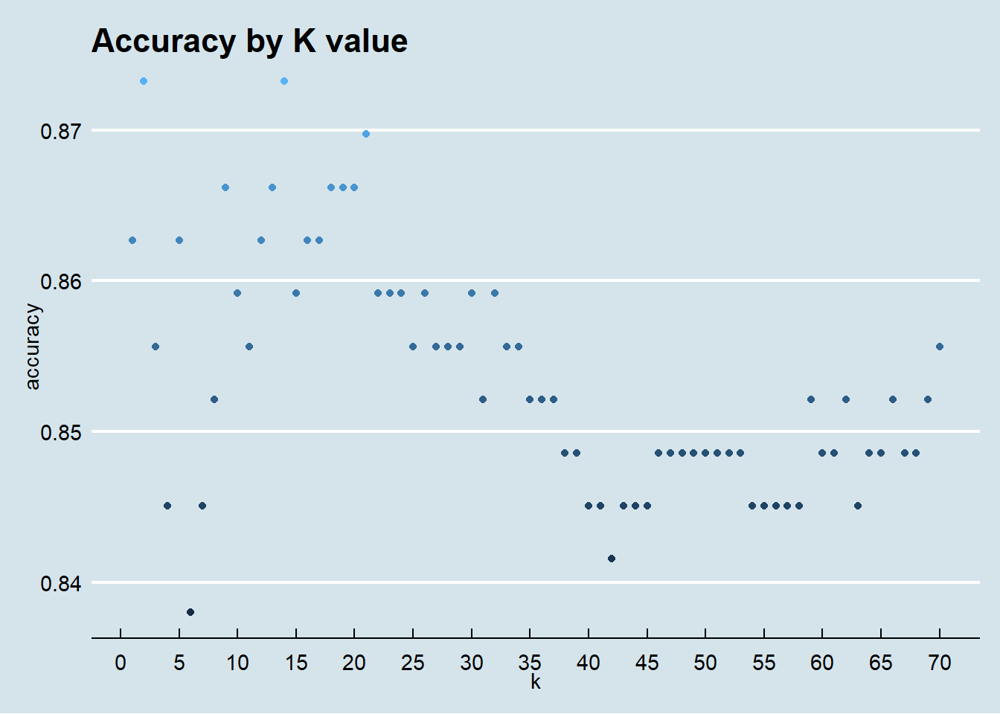
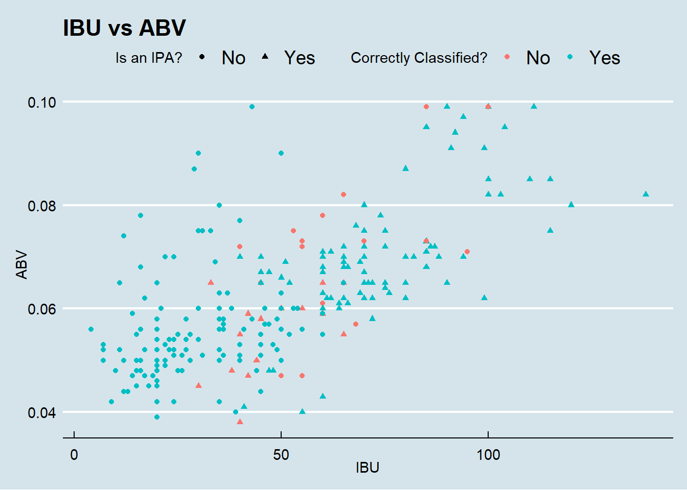
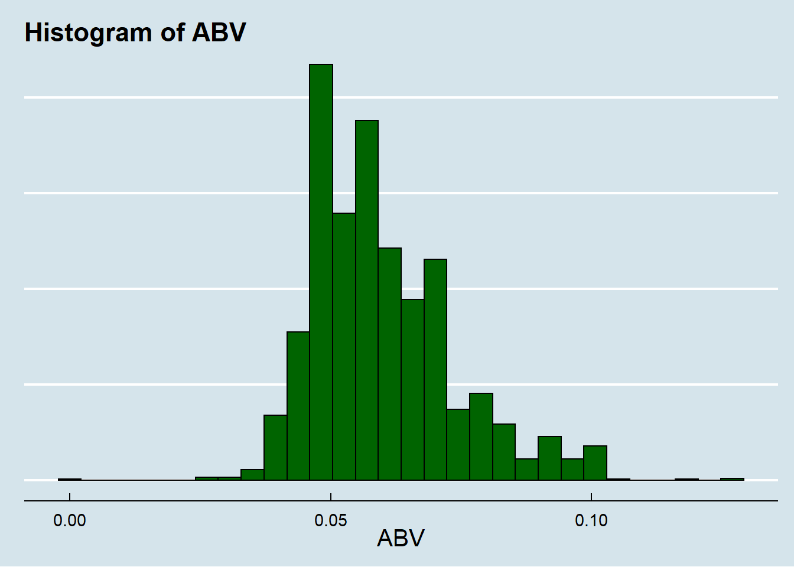
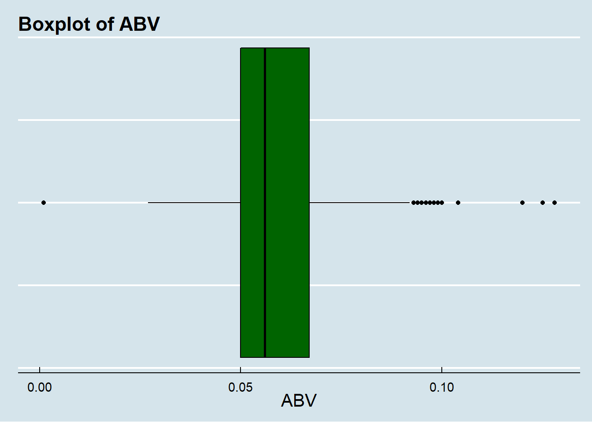

library(ggplot2)
library(magrittr)
library(dplyr) ##
## Attaching package: 'dplyr'## The following objects are masked from 'package:stats':
##
## filter, lag## The following objects are masked from 'package:base':
##
## intersect, setdiff, setequal, unionlibrary(GGally)## Registered S3 method overwritten by 'GGally':
## method from
## +.gg ggplot2library(tibble)
library(class)
library(caret) ## Loading required package: latticelibrary(e1071)
library(readr)
library(ggthemes)Breweries = read.csv('C:/Users/L/Downloads/Breweries.csv')
Beers = read.csv('C:/Users/L/Downloads/Beers.csv')head(Breweries)## Brew_ID Name City State
## 1 1 NorthGate Brewing Minneapolis MN
## 2 2 Against the Grain Brewery Louisville KY
## 3 3 Jack's Abby Craft Lagers Framingham MA
## 4 4 Mike Hess Brewing Company San Diego CA
## 5 5 Fort Point Beer Company San Francisco CA
## 6 6 COAST Brewing Company Charleston SChead(Beers)## Name Beer_ID ABV IBU Brewery_id Style Ounces
## 1 Chugach Session Ale 919 0.048 NA 494 Cream Ale 12
## 2 Snowshoe White Ale 587 0.048 12 224 Witbier 12
## 3 King Street Blonde Ale 1665 0.049 NA 103 American Blonde Ale 12
## 4 Urban Wilderness Pale Ale 30 0.049 NA 558 English Pale Ale 12
## 5 Northern Lights Amber Ale 921 0.050 15 494 American Amber / Red Ale 12
## 6 Peninsula Brewers Reserve (PBR) 1187 0.050 15 459 American Blonde Ale 12Breweries %>% count(State, sort = TRUE)## State n
## 1 CO 47
## 2 CA 39
## 3 MI 32
## 4 OR 29
## 5 TX 28
## 6 PA 25
## 7 MA 23
## 8 WA 23
## 9 IN 22
## 10 WI 20
## 11 NC 19
## 12 IL 18
## 13 NY 16
## 14 VA 16
## 15 FL 15
## 16 OH 15
## 17 MN 12
## 18 AZ 11
## 19 VT 10
## 20 ME 9
## 21 MO 9
## 22 MT 9
## 23 CT 8
## 24 AK 7
## 25 GA 7
## 26 MD 7
## 27 OK 6
## 28 IA 5
## 29 ID 5
## 30 LA 5
## 31 NE 5
## 32 RI 5
## 33 HI 4
## 34 KY 4
## 35 NM 4
## 36 SC 4
## 37 UT 4
## 38 WY 4
## 39 AL 3
## 40 KS 3
## 41 NH 3
## 42 NJ 3
## 43 TN 3
## 44 AR 2
## 45 DE 2
## 46 MS 2
## 47 NV 2
## 48 DC 1
## 49 ND 1
## 50 SD 1
## 51 WV 1# Change column name in Brewery file to clarify names
Beers = Beers %>% rename(Beer_Name = Name, Brew_ID = Brewery_id)
colnames(Breweries)[2] = "Brewery_Name"
Beer_Brew_Combo = merge(Beers,Breweries,c("Brew_ID")) head(Beer_Brew_Combo, 6)## Brew_ID Beer_Name Beer_ID ABV IBU Style Ounces Brewery_Name City State
## 1 1 Pumpion 2689 0.060 38 Pumpkin Ale 16 NorthGate Brewing Minneapolis MN
## 2 1 Maggie's Leap 2691 0.049 26 Milk / Sweet Stout 16 NorthGate Brewing Minneapolis MN
## 3 1 Parapet ESB 2687 0.056 47 Extra Special / Strong Bitter (ESB) 16 NorthGate Brewing Minneapolis MN
## 4 1 Stronghold 2688 0.060 25 American Porter 16 NorthGate Brewing Minneapolis MN
## 5 1 Wall's End 2690 0.048 19 English Brown Ale 16 NorthGate Brewing Minneapolis MN
## 6 1 Get Together 2692 0.045 50 American IPA 16 NorthGate Brewing Minneapolis MNtail(Beer_Brew_Combo, 6)## Brew_ID Beer_Name Beer_ID ABV IBU Style Ounces Brewery_Name City State
## 2405 556 Pilsner Ukiah 98 0.055 NA German Pilsener 12 Ukiah Brewing Company Ukiah CA
## 2406 557 Heinnieweisse Weissebier 52 0.049 NA Hefeweizen 12 Butternuts Beer and Ale Garrattsville NY
## 2407 557 Porkslap Pale Ale 49 0.043 NA American Pale Ale (APA) 12 Butternuts Beer and Ale Garrattsville NY
## 2408 557 Snapperhead IPA 51 0.068 NA American IPA 12 Butternuts Beer and Ale Garrattsville NY
## 2409 557 Moo Thunder Stout 50 0.049 NA Milk / Sweet Stout 12 Butternuts Beer and Ale Garrattsville NY
## 2410 558 Urban Wilderness Pale Ale 30 0.049 NA English Pale Ale 12 Sleeping Lady Brewing Company Anchorage AKsapply(Beer_Brew_Combo, function(x) sum(is.na(x)))## Brew_ID Beer_Name Beer_ID ABV IBU Style Ounces Brewery_Name City State
## 0 0 0 62 1005 0 0 0 0 0ABV_IBU_Medians = Beer_Brew_Combo %>%
group_by (State) %>%
summarise(Median_ABV = median(ABV, na.rm = TRUE), # na.rm filters out the missing values when computing value
Median_IBU = median(IBU, na.rm = TRUE))
ABV_IBU_Medians %>%
ggplot(aes(x = reorder(State, -Median_ABV,), y = Median_ABV)) +
geom_bar(stat = 'identity', fill = 'dark green') +
labs(x = 'State', y = 'Median ABV', title = 'Median ABV by State') +
theme_economist() +
theme(legend.position = 'none', axis.text.x = element_text(angle = 270, hjust = 1)) 
ABV_IBU_Medians %>%
ggplot(aes(x = reorder(State, -Median_IBU,), y = Median_IBU)) +
geom_bar(stat = 'identity', fill = 'dark green') +
labs(x = 'State', y = 'Median IBU', title = 'Median IBU by State') +
theme_economist() +
theme(legend.position = 'none', axis.text.x = element_text(angle = 270, hjust = 1))## Warning: Removed 1 rows containing missing values (position_stack). ## Which state has the maximum alcoholic beer? Which state has the most bitter beer?
Beer_Brew_Combo %>% arrange(-ABV) %>% select(Beer_Name, ABV, State) %>% head(1)## Beer_Name ABV State
## 1 Lee Hill Series Vol. 5 - Belgian Style Quadrupel Ale 0.128 COBeer_Brew_Combo %>% arrange(-IBU) %>% select(Beer_Name, IBU, State) %>% head(1)## Beer_Name IBU State
## 1 Bitter Bitch Imperial IPA 138 ORcor(x = Beer_Brew_Combo$IBU, y = Beer_Brew_Combo$ABV, method = 'pearson', use = 'na.or.complete')## [1] 0.6706215Beer_Brew_Combo %>%
ggplot(aes(x = IBU, y = ABV)) +
geom_point(color = 'dark green') +
labs(title = 'Scatter Plot of IBU and ABV') +
theme_economist() +
theme(axis.title.y = element_text(size = 15), axis.title.x = element_text(size = 15),legend.position = 'none')## Warning: Removed 1005 rows containing missing values (geom_point).
ipa_ale_df = Beer_Brew_Combo %>%
filter(!is.na(ABV) &
!is.na(IBU) &
(grepl('\\bIPA\\b', Style, ignore.case = TRUE) | !grepl('\\bIPA\\b', Style) &
grepl('\\bALE\\b', Style, ignore.case = TRUE))
) %>%
mutate(isIPA = ifelse(grepl('\\bIPA\\b', Style, ignore.case = TRUE), 1, 0),
scaled_ibu = scale(IBU),
scaled_abv = scale(ABV)
)
sample_size = floor(.70 * nrow(ipa_ale_df))
set.seed(67)
train_index = sample(seq_len(nrow(ipa_ale_df)), size = sample_size)
train_df = ipa_ale_df[train_index, ]
test_df = ipa_ale_df[-train_index, ]
accuracy_df = data.frame(accuracy = numeric(70), k = numeric(70))
for(i in 1:70)
{
beer_classifications = knn(train_df[, c(12,13)],
test_df[, c(12,13)],
train_df$isIPA,
prob = TRUE, k = i)
CM = confusionMatrix(table(beer_classifications, test_df$isIPA))
accuracy_df$accuracy[i] = CM$overall[1]
accuracy_df$k[i] = i
}
print(accuracy_df %>% arrange(-accuracy) %>% head())## accuracy k
## 1 0.8732394 2
## 2 0.8732394 14
## 3 0.8697183 21
## 4 0.8661972 9
## 5 0.8661972 13
## 6 0.8661972 18accuracy_df %>%
ggplot(aes(x = k, y = accuracy, color = accuracy)) +
geom_point() +
scale_x_continuous(breaks = seq(0, 70, 5)) +
labs(title = 'Accuracy by K value') +
theme_economist() +
theme(legend.position = 'none')  ### Highest accuracy occurs when k = 2 or 14, so we will go with 14
set.seed(67)
classifications = knn(train_df[, c(12,13)],
test_df[, c(12,13)],
train_df$isIPA,
prob = TRUE, k = 14)
print(confusionMatrix(table(classifications, test_df$isIPA)))## Confusion Matrix and Statistics
##
##
## classifications 0 1
## 0 144 19
## 1 17 104
##
## Accuracy : 0.8732
## 95% CI : (0.8289, 0.9096)
## No Information Rate : 0.5669
## P-Value [Acc > NIR] : <2e-16
##
## Kappa : 0.7414
##
## Mcnemar's Test P-Value : 0.8676
##
## Sensitivity : 0.8944
## Specificity : 0.8455
## Pos Pred Value : 0.8834
## Neg Pred Value : 0.8595
## Prevalence : 0.5669
## Detection Rate : 0.5070
## Detection Prevalence : 0.5739
## Balanced Accuracy : 0.8700
##
## 'Positive' Class : 0
## test_df$classification = classifications
test_df = test_df %>%
mutate(correct_classification = factor(ifelse(isIPA == classification, 1, 0), labels = c('No', 'Yes')),
isIPA = factor(ifelse(isIPA == 1, 1, 0), labels = c('No', 'Yes')))
test_df %>%
ggplot(aes(x = IBU, y = ABV, color = correct_classification)) +
geom_point(aes(shape = isIPA)) +
theme_economist() +
labs(title = 'IBU vs ABV', color = 'Correctly Classified?', shape = 'Is an IPA?')
Comment on the summary statistic and distribution of the ABV variable


The lack of difference between the mean and the 10% trimmed mean tells us there are minimal outliers in the data.
Looking at the histogram and boxplot, it is apparent the data is approximately normally distributed